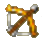
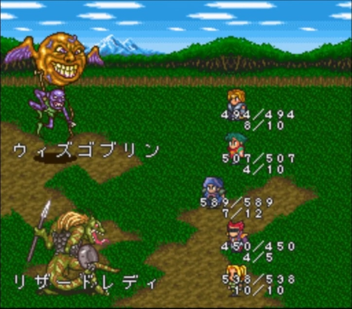
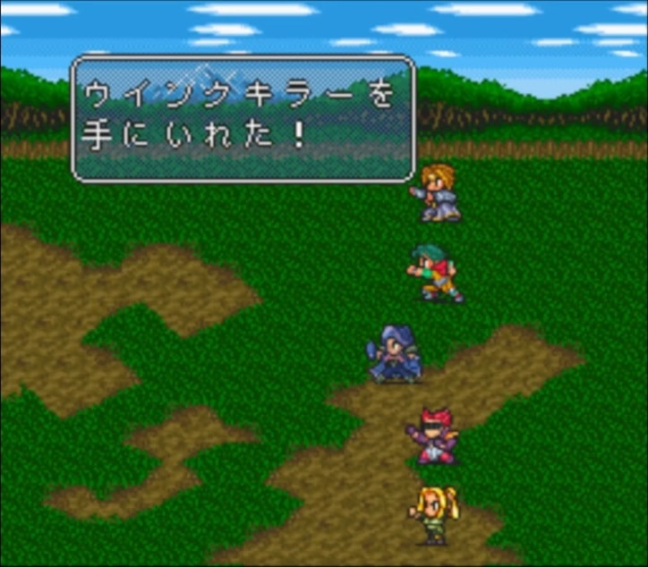
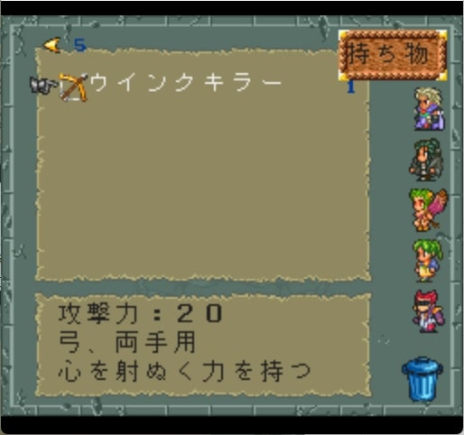
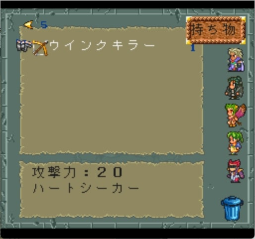

ウインクキラー
どうやって手に入れる？
ウィズゴブリンという敵が稀に落とします。中盤にしか登場しない敵なので、タイミングを逃すと手に入れることができません。ロマサガ2でもトップクラスにレアなアイテムだと思います。


ウインクキラーについては、以下の動画でも解説しています。見ていただけると嬉しいです。
名前の由来
「ウインクキラー」というトランプゲームや、1985年の曲にウインク・キラーという曲があったりします。おそらくこのあたりからとった名前でしょう。
どんな武器？
弓。攻撃力は20。「心を射ぬく力を持つ」とされており、固有技のハートシーカーを覚えることができます。


固有技のハートシーカー
ハートシーカーの閃き難度は、通常攻撃からの場合は19で、ビーストスレイヤーからの派生の場合は9です。なので、ビーストスレイヤーを使用していた方が閃きやすいです（参考）。
ハートシーカーの命中判定
ハートシーカーの状態異常の命中判定は、大半の状態異常技の通りとなっています。以下、カエル研究所より引用。
状態異常が成功するためには、『命中判定』と『回避判定』の両方の判定をクリアする必要があります。それぞれ以下のような意味です。
| 判定 | 意味 | 計算 |
|---|---|---|
| 命中判定 | 攻撃が命中するかどうかの判定 | 命中(※) + [LV ÷ 2] ＞ (乱数 mod 100) ※ハートシーカーの場合は85 |
| 回避判定 | 敵が攻撃を回避するかどうかの判定 | 敵防御 × 補正(※) ≦ (乱数 mod 100) ※ハートシーカーの場合は16 |
ハートシーカー以外の魅了技・術で味方が使用可能なのは「ゴーストライト」ですが、冥術なので、プレイ状況によってはゴーストライトは使用できません。
魅了技はかなり貴重な技だと思います。
参考